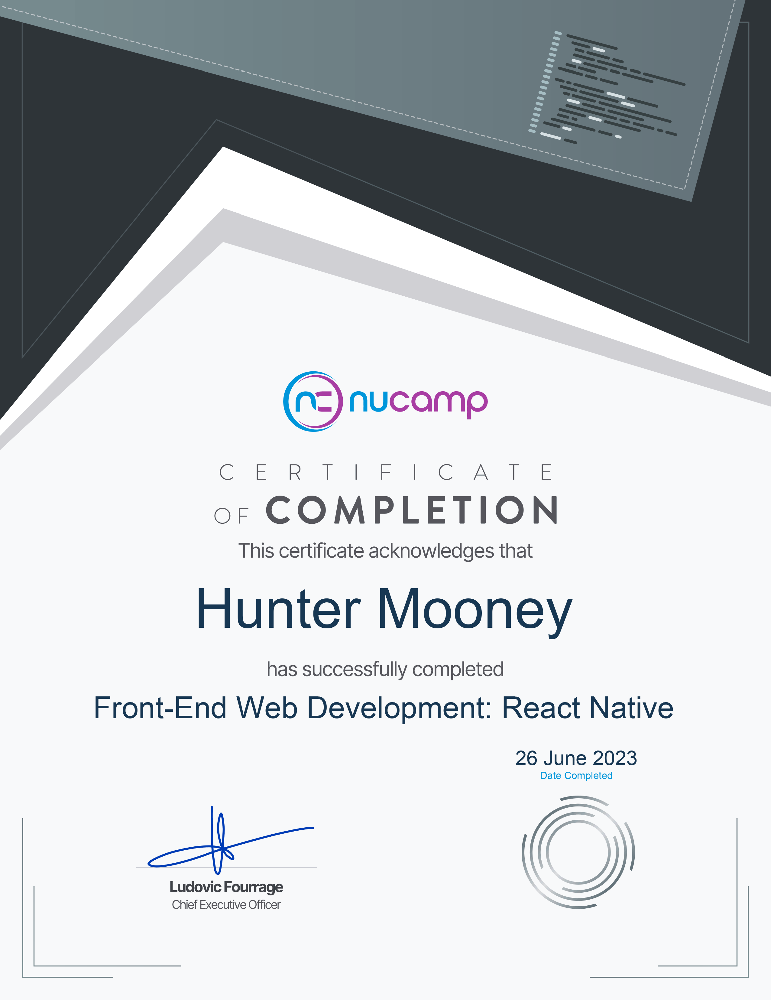

Resume
Education
Back-End Development with NodeJs, Express and MongoDB
2023 - Present
Nucamp
Coding Bootcamp
Currently studying a comprehensive course on server-side development with
NodeJS,
Express, and MongoDB, focusing on storing data in the back-end and
seamlessly integrating it with websites and mobile applications. Acquiring
knowledge in user authentication and fundamental cybersecurity principles.
Utilizing NodeJS as the foundational server-side technology and MongoDB as
the database engine, leveraging their open-source nature and free
accessibility.
Front End Web + Mobile Development
2023
Nucamp
Coding Bootcamp
In Nucamp Bootcamp's Front End Web and Mobile Development bootcamp, I
gained expertise in HTML, CSS, JavaScript, and mobile app development. I
learned to create engaging user interfaces and develop responsive web and
mobile applications. This bootcamp prepared me for a career in front-end
development.
Web Development Fundamentals
2023
Nucamp
Coding Bootcamp
In Nucamp Bootcamp's Web Development Fundamentals course, I gained a
comprehensive understanding of HTML, CSS, and JavaScript, along with skills
in responsive web design and website styling. It provided a solid foundation
for a career in web development and creating visually appealing websites.
Graphic Design, Associate of Science (AS)
2007 - 2010
Kilgore College
Kilgore, TX
My pursuit of an Associate of Science (AS) degree in Graphic Design
provided me with a comprehensive education in the art and principles of
visual communication. Through a curriculum focused on design theory,
typography, digital imaging, and layout, I developed a keen eye for
aesthetics and mastered industry-standard design software. Collaborative
projects and critiques enhanced my ability to create impactful and visually
compelling designs while considering user experience and brand identity.
This education experience equipped me with the skills and creativity to
translate concepts into captivating visual solutions, positioning me for
success in the dynamic field of graphic design.
Experience
Maintenance Technician
2022 - Present
Grand Saline Housing Authority
Grand Saline, TX
Responsible for the upkeep of government housing for low-income families,
the disabled, and elderly. With expertise in plumbing, electrical work,
mowing, painting, mudding, tape and bed, inspections, and general
maintenance, I contributed to the overall functionality and livability of
the housing community.
Motion Graphic Artist
2020 - 2021
TENGA Design Tank
Denver, CO
In my role as a Motion Graphic Artist at The TEGNA Design Tank, an esteemed
design studio overseeing 60+ news stations across the United States, I had
the privilege of creating visually compelling broadcast content. Working
alongside a talented team of designers and creative professionals, I
contributed to the development of captivating motion graphics that enhanced
storytelling and captivated viewers.
3D Artist
2020 - 2020
Four Story Creative
Waxahachie, TX
In my role as a 3D Artist specializing in VR/AR Unity platforms, including
Oculus Rift and Android, I have been instrumental in building immersive and
interactive experiences. I have created visually stunning 3D assets,
followed design guidelines, optimized models, and collaborated with artists,
animators, and developers to bring projects to life.
Motion Graphic Artist
2017 - 2018
TEGNA Design Tank
Denver, CO
In my role as a Motion Graphic Artist at The TEGNA Design Tank, an esteemed
design studio overseeing 40+ news stations across the United States, I had
the privilege of creating visually compelling broadcast content. Working
alongside a talented team of designers and creative professionals, I
contributed to the development of captivating motion graphics that enhanced
storytelling and captivated viewers.
Website Producer & Social Media Coordinator
2016 - 2017
CBS19 KYTX
Tyler, TX
As a Digital Content Publisher, I have played a critical role in delivering
timely and engaging news
content to the station's digital platforms. With responsibilities ranging
from publishing daily breaking
news to producing and editing video content, I have also utilized CMS
software, implemented SEO
analytics, and prioritized captivating stories to drive increased traffic to
the station's website.
Lead Production Artist
2012 - 2017
CBS19 KYTX
Tyler, TX
As a Lead Production Artist, I have been responsible for designing
captivating graphics, controlling lower thirds using broadcast
hardware/software during primetime broadcasts, and producing error-free
content for daily use. Additionally, I have mentored and trained numerous
graphic operators on playout machines, maximized operational efficiency in
the control room, and contributed to troubleshooting, maintenance, and
workflow optimization through template creation.
Camera Operator & Assistant Production Artist
2011 - 2012
CBS19 KYTX
Tyler, TX
As a Studio Camera Operator and Assistant Production Artist, my role has
encompassed operating studio cameras, managing teleprompter operations, and
performing various miscellaneous tasks as needed. Additionally, I have been
responsible for designing graphics and controlling lower thirds using video
broadcast hardware/software during live evening broadcasts on weekends.
Awards
Certificate of Honor
Certificates
Front End + Mobile

React Native
React
Bootstrap